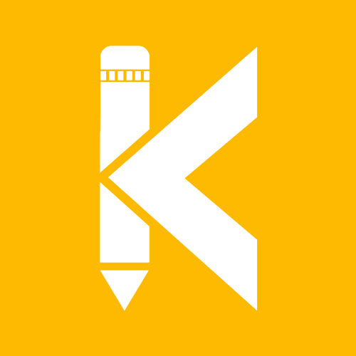

Hi, My name is Suman
and I am a passionate

Work Experiance
Eagleview (2021-2022)
I have experience in a role that required proficiency in roof and wall file measurement using
RH, TW, and Saranac software tools. My responsibilities included ensuring files met quality
standards and deadlines, addressing rework when necessary, and maintaining effective
communication with supervisors and team members. I followed standard processes, tracked progress
using shared sheets, and coordinated with colleagues on complex files. Proficiency in the
"Traffic Hud" program and basic Microsoft Excel was essential. Additionally, I consistently
adhered to company rules, regulations, and the Code of Conduct. This experience reflects my
attention to detail, software skills, and commitment to quality assurance.

Training at Kodnest (2022-2023)
During my training at Kodnest, I immersed myself in a comprehensive Full Stack Development
program that provided invaluable hands-on experience. Through a series of immersive projects, I
gained proficiency in both front-end and back-end development, mastering essential technologies
and frameworks. What set this program apart was its inclusion of manual testing, a crucial skill
in ensuring the quality and reliability of software applications. This training not only
broadened my technical skill set but also instilled a disciplined approach to software
development and testing, equipping me with a well-rounded foundation for a successful career in
the field.